Main principles
- Organise your work in a clear and standardised way
- Document all the steps and products (metadata, scripted analyses, readme…)
- Start from the beginning of the project
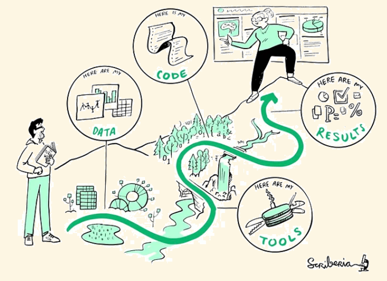
Cirad - UnB
2026-07-17
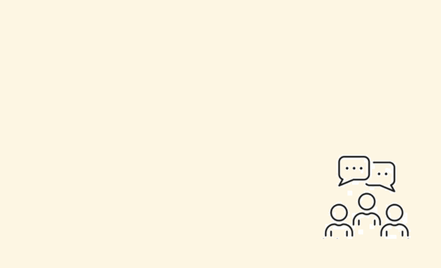
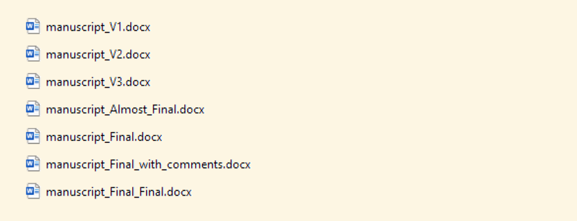
“We collected data following standard protocols and analysed them using the StatForDummies software.”
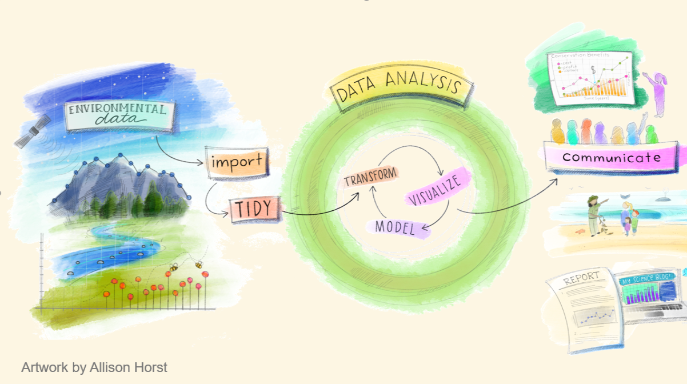
“Reproducibility is a key tenet of the scientific process that dictates the reliability and generality of results and methods.” Powers & Hampton (2019) Ecological Applications
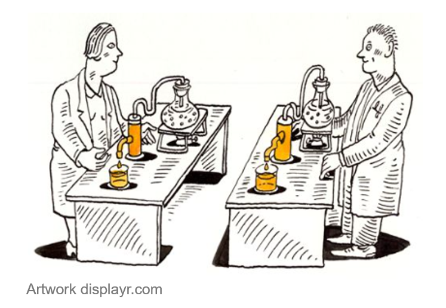
“Computational reproducibility often refers to the ability to produce equivalent analytical outcomes from the same data set using the same code and software as the original study.” Powers & Hampton (2019) Ecological Applications
Easier for others (and the future you…) to understand your work.
Requirement of journals and fundings
You and other can build on previous analyses.
You can easily update your analyses when more data become available.
“An article about computational results is advertising, not scholarship. The actual scholarship is the full software environment, code and data, that produced the result.” Claerbout and Karrenbach 1992.

Wilson et al (2017) PLoS Computational Biology
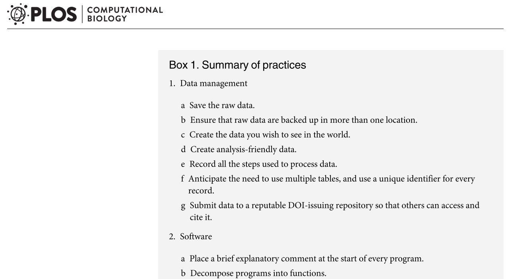
Make it easy for other to contribute to your project by:
Integrate writing into the workflow for easy control of version and update
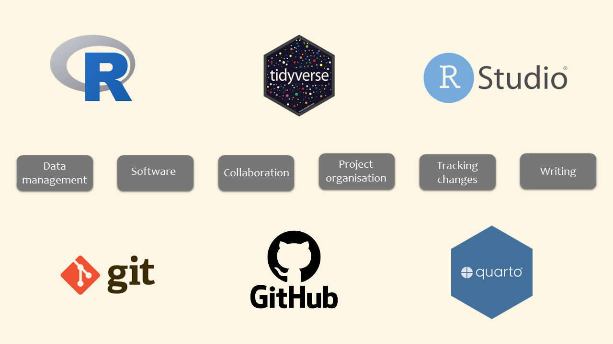
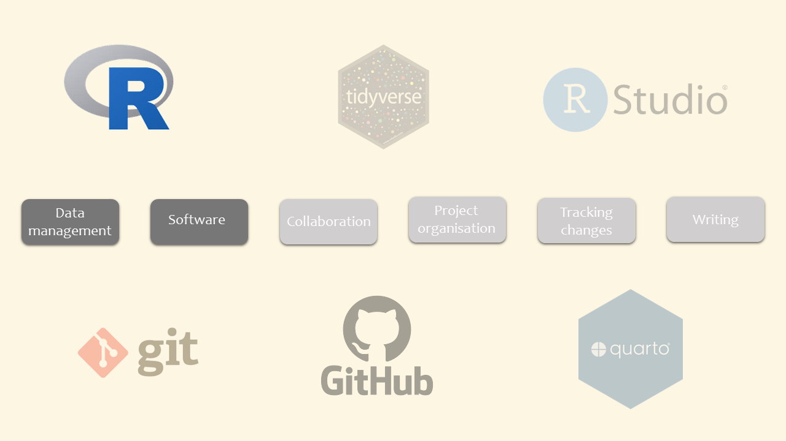
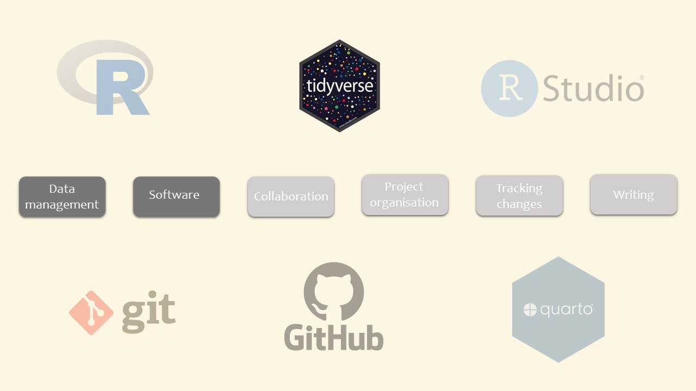
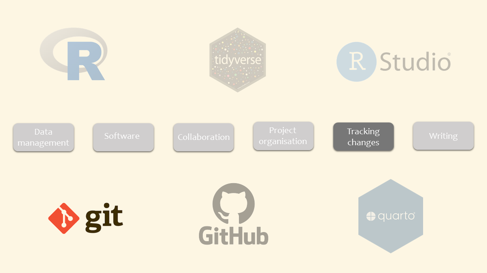
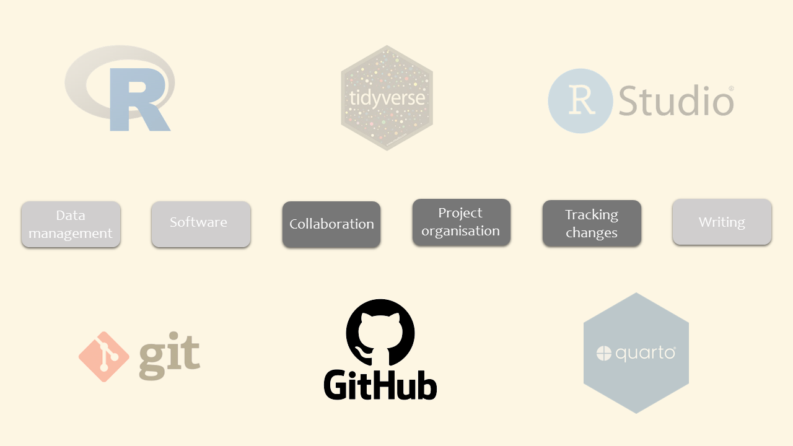
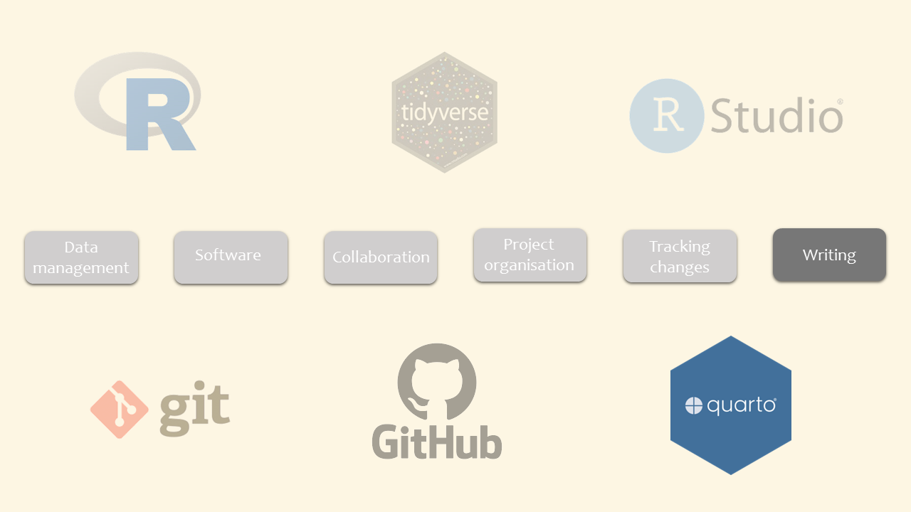
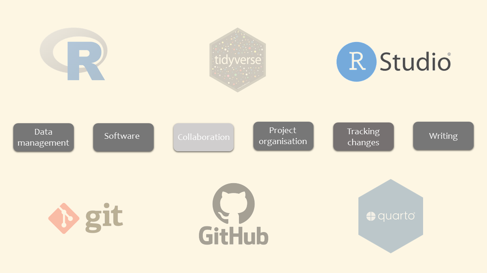
This document largely uses the following: